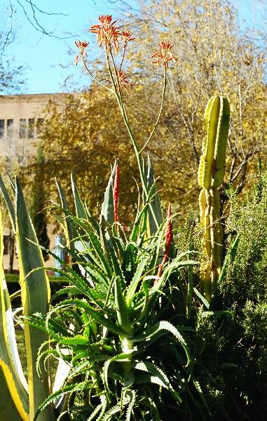

| Aloe arborescens Mill., Gard. Dict., ed. 8. n. 3 (1768) | Aloáceas |
| Áloe de los candelabros |
Planta
crasa |
|
Planta
crasa, con roseta
de hojas basaleses y escapo
de 1,5 m. Hojas simples, de 30-50 × 2-4 cm y 2 cm de grosor, dispuestas en roseta basal, cóncavas por el haz y convexas por el envés, crasas, de color verde oscuro, de superficie lisa, con el margen provisto de dientes dirigidos hacia el ápice y punta aguda. Inflorescencias de unos 80 cm, formada por racimos densos, generalmente arqueados. Flores de 3-4 cm, hermafroditas, pedunculadas, de color rojo; periantio petaloideo, formado por 6 tépalos soldados formando un tubo; 6 estambres que sobresalen de la envuelta floral; ovario súpero. Fruto en forma de cápsula alargada de paredes poco consistentes. |
 Foto: Carlos Romero Zarco, 2005 |
| Detalles:
|
Observaciones.- Su nombre procede
del griego aloe, traducido más tarde al latín.
En condiciones favorables, puede florecer durante todo el año. Los áloes se utilizan en la medicina desde hace mas de 2.000 años. El interior de las hojas contiene una savia lechosa, de consistencia gelatinosa, muy característica de este género. El gel extraído de sus hojas contiene diversos elementos (aloína), que actúan como favorecedores de la cicatrización. Muy conocida por sus aplicaciones sobre la epidermis ayudando al tratamiento de quemaduras, acné, picaduras de insectos, etc... la lista es interminable. |
| Área de Origen.- El áloe tiene su origen en Sudáfrica. | |
| Uso en el campus.- En rocallas
decorartivas |
Localización.- Ver plano del centro del
Campus |
| © Ángela Mª Parody Merino & Carlos Romero Zarco, 2003 | |